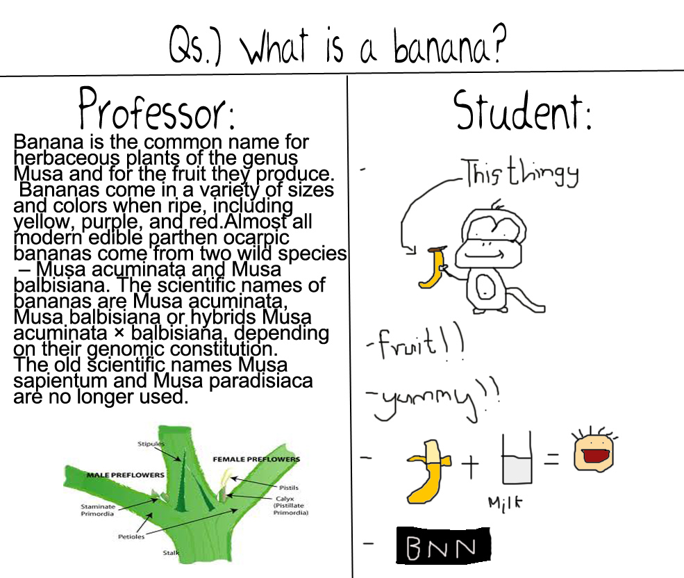

When do we Plagiarise...
We plagiarise when...
- Students/Researches,etc have to submit assignments (usually in a less amount of time) and don't have time to actually phrase an answer
- we don't have insufficient content or informationfor our reports, assignments,etc
- we don't know we actually are plagiarising. This is the most occured case, we usually copy/paste our work without knowing that we are actually "stealing" someone else's work
- we we need a better form of answers or information, as our answers/reports are of mediocre level and lacks solid points and experience.
- to take someone else's efforts and show them as our own, usually for reasons like popularity and fams 